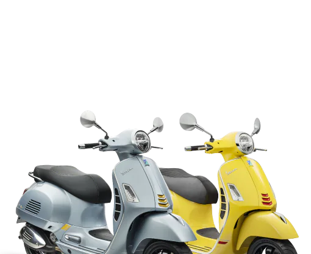
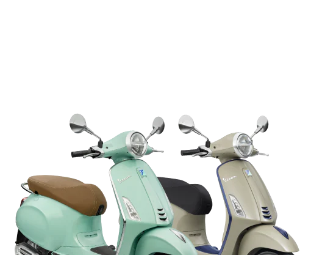
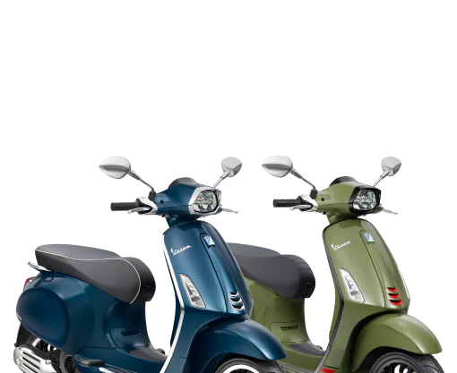
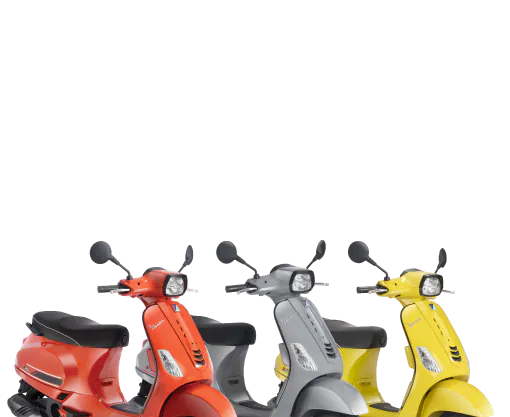
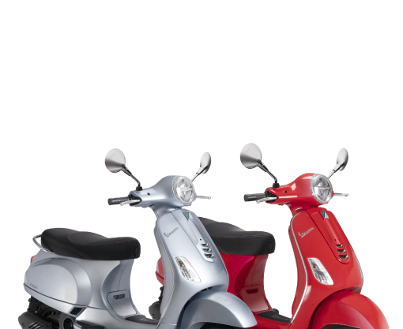

Sejarah Vespa
1950: Merupakan era yang paling bersejarah bagi Vespa karena di era ini Vespa lahir dan berkembang di Indonesia.
1960: Setelah dekade pertama sejak kelahirannya, Vespa semakin diterima dan populer. Pemerintah Indonesia memberikan Vespa atas jasa Kontigen Garuda sebagai Pasukan Penjaga Perdamaian Indonesia yang bertugas di Kongo. Momentum ini menjadi sebuah torehan sejarah yang berarti dan mendalam bagi Vespa di Indonesia.
1970: Kejayaan Vespa berlanjut melalui model-model ikonik dan klasik dari Vespa Sprint 150cc, Vespa Super 150cc dan Vespa Special 90cc.
1980: Vespa Excel 200cc dan Vespa Spartan 200cc merupakan dua model big engine pertama yang dipasarkan di Indonesia dan diapresiasi oleh seluruh pecinta Vespa di Indonesia hingga saat ini.
1990: Vespa Corsa yang dilengkapi starter elektrik dan transmisi matik hadir pertama kali di Indonesia.
2000: Ulang tahun ke-50, Vespa mempersembahkan Vespa ET dalam tiga versi: Vespa ET4, Vespa ET2, dan Vespa ET2 Injection.
2011: PT Piaggio hadir secara resmi di Indonesia untuk memberikan pelayanan dan produk terbaik bagi konsumen dari market ini. Produk yang pertama di bawa oleh PT Piaggio Indonesia adalah Vespa LX 150 2v dan Vespa S 150 2v.
2012: Vespa kembali menghadirkan line up big engine dengan menghadirkan Vespa GTS 250 sebagai flagship dari Vespa 2012, dan juga Vespa PX 150.
2013: PT Piaggio meluncurkan Vespa Primavera 150 3v, Vespa Sprint 3v dan Vespa 946 Ricardo Italiano.
2015: Vespa berkolaborasi dengan Giorgio Armani, salah satu brand ternama di dunia dan meluncurkan Vespa 946 Emporio Armani.
2016: Merayakan ulang tahun yang ke-70, Vespa menghadirkan Vespa Settantesimo ayang direpresentasikan oleh model Vespa PX, Primavera, dan GTS.
2017: PT Piaggio Indonesia memperkenalkan Vespa GTS 300
2020: Vespa menghebohkan industri kendaraan roda dua dan lifestyle dengan berkolaborasi dengan seniman kelas dunia melalui Vespa Primavera Sean Wotherspoon dengan jumlah yang sangat terbatas.
2021: Vespa berulang tahun ke-75 dan telah mencapai lebih dari 19 juta unit produksi secara global
Type Vespa Matic
Vespa GTS

Vespa GTS adalah skuter "big body" yang paling sporty dan paling kuat.
Vespa GTS tercatat dalam sejarah sebagai salah satu kendaraan roda dua yang paling dicintai didunia, dikenal sebagai "Vespon" yang legendaris, nama yang disematkan pada Vespa dengan tubuh baja yang besar dan padat.
Vespa Primavera

Sebuah ikon teknologi mutakhir. Primavera adalah kombinasi yang paling brilian antara tradisi, inovasi dan ramah pada lingkungan.
Sejarah Vespa menunjukan bahwa keberadaan kaum muda selalu terdorong oleh upaya keras mereka dalam membangun impian. Vespa Primavera menambah titik seru dalam budaya pop kaum muda. Selama 50 tahun, Vespa Primavera merupakan "perantara resmi" kaum muda dalam mewujudkan impian dan kebebasan.
Vespa Sprint

Vespa yang paling sporty dan dinamis, sebagai ahli waris dari Vespino yang melegenda dan menjadi idola generasi muda pada tahun 60an. Sprint terbaru hadir dengan memadukan gaya yang segar dan karakter yang sporty dengan teknologi yang mutakhir.
Ramping dan ringan dengan desain yang awet muda. Vespa Sprint adalah evolusi dari Primavera dan mudah dikenali dengan lampu persegi panjang yang berani dan roda besar 12 inci, dengan jari-jari yang menakjubkan dalam paduan aluminium.
Vespa S

Vespa S tetap menjadi pilihan yang menyenangkan dan teman bagi mereka yang ingin mengarungi kegembiraan mengendarai skuter klasik ala italia yang muda dan sporty. Vespa S baru memiliki elemen kesederhanaan, minimalis, dinamis, dan sporty yang diwariskan pendahulunya, Vespa 50 Special yang tersohor, menjadikan Vespa S teman sempurna bagi orang muda.
Terus memperbaharui gaya dan meningkatkan fungsi untuk menjadikan Vespa S sebuah skuter yang benar-benar bergaya dan dinamis dengan tampilan yang lebih kuat dan maskulin dari sebuah VEspa "small body".
Vespa LX

Desainnya yang serupa dengan bentuk tawon membuat karakteristik Vespa menjadi unik yang memadukan secara harmonis antara warisan budaya Vespa dengan modernitas abad 21.
Vespa LX 125 i-get adalah skuter ikonik, indah dengan warna-warna berani dan harga yang menarik sangat menjawab keinginan generasi muda Indonesia masa kini. Teknologi i-get akan meningkatkan performa, efesiensi bahan bakar dan mengurangi kebisingan dalam berkendara serta sangat efisien.